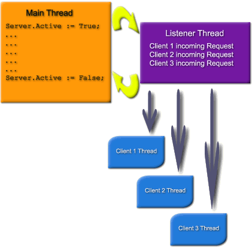

Topic Path: Introduction to the Indy Project > Introduction to Indy
   |
   |
Introduction to Indy
|
|
|
An introduction to Internet Direct (Indy) written by the project Coordinator (and original author).
I originally wrote this article in the days of Indy 8.0. Most of the article still applies and is very useful for newer versions of Indy. If you like this article and would like to read many more in depth articles, please check out Indy in Depth.
Indy uses blocking socket calls. Blocking calls are much like reading and writing to a file. When you read data, or write data, the function will not return until the operation is complete. The difference from working with files is that the call may take much longer as data may not be immediately ready for reading or writing (It can only operate as fast as the network or the modem can handle the data).
For example, to connect simply call the connect method and wait for it to return. If it succeeds, it will return when it does. If it fails, it will raise an exception.
Blocking sockets have been repeatedly attacked with out warrant. Contrary to popular belief, blocking sockets are not evil.
When Winsock was "ported" to Windows, a problem quickly arose. In Unix it was common to fork (kind of like multi threading, but with separate processes instead of threads). Unix clients and daemons would fork processes, which would run, and use blocking sockets. Windows 3.x could not fork and did not support multi threading. Using the blocking interface "locked" user interfaces and made programs unresponsive. So asynchronous extensions were added to WinSock to allow Windows 3.x with its shortcomings to use Winsock without "locking" the main and only thread of a program. This however required a different way of programming., and Microsoft and others vilified blocking vehemently so as to mask the shortcomings of Windows 3.x.
Then along came Win32 which could properly multi-thread. But at this point, everyone's mind had been changed (i.e. Developers believed blocking sockets were evil), and it is hard to "backtrack" once a statement has been made. So the continued vilification of blocking sockets continues.
In reality, blocking sockets are the ONLY way Unix does sockets. Blocking sockets also offer other advantages, and are much better for threading, security, and other aspects. Some extensions have been added for non-blocking sockets in Unix. However they work quite differently than in Windows. They also are not standard, and not in wide use. Blocking sockets under Unix still are used in almost every case, and will continue to be so.
|
Easy to program |
Blocking is very easy to program. All user code can exist in one place, and in a sequential order. |
|
Easy to port |
Since Unix uses blocking sockets, portable code can be written easily. Indy uses this fact to achieve its single source solution. |
|
Work well in threads |
Since blocking sockets are sequential they are inherently encapsulated and therefore very easily used in threads. |
|
User Interface "Freeze" |
Blocking socket calls do not return until they have accomplished their task. When such calls are made in the main thread of an application, the application cannot process the user interface messages. This causes the User Interface to "freeze" because the update, repaint and other messages cannot be processed until the blocking socket calls return control to the applications message processing loop. |
Indy has a special component that solves the User Interface freeze problem transparently. Simply add one TIdAntiFreeze anywhere in your application, and you can perform standard blocking Indy calls in your program without the User Interface being frozen.
The TIdAntiFreeze works by internally timing out calls to the stack and calling Application.ProcessMessages during timeouts. The external calls to Indy continue to block, and thus work exactly as without a TIdAntiFreeze otherwise. Use of a TIdAntiFreeze allows for all the advantages of blocking sockets, without the most prominent disadvantage.
Threading is almost always used with blocking sockets. Non-blocking sockets can be threaded as well, but they require some extra handling and their advantages are lost with blocking sockets. Threading will be discussed briefly as it is important in writing blocking socket servers. Threading can also be used to write advanced blocking clients.
Threading Advantages
|
Prioritization |
Individual threads priorities can be adjusted. This allows individual server tasks or individual connections to be given more or less CPU time. |
|
Encapsulation |
Each connection will be self-contained and less likely to interfere with other connections. |
|
Security |
Each thread can have different security attributes. |
|
Multiple Processors |
Threading automatically will take advantage of multiple processors. |
|
No Serialization |
Threading provides true concurrency. Without threading all requests must be handled by a single thread. For this to work each task to be performed must be broken up into small pieces that can always execute quickly. If any task part blocks or takes time to execute all other task parts will be put on hold until it is complete. After each task part is complete, the next one is processed, etc. With threading, each task can be programmed as a complete task and the operating system will divide CPU time among the tasks. |
The creation and destruction of threads can be resource intensive. This is especially evident with servers that have short-lived connections. Such servers create a thread use it for very brief time and then destroy it. This causes for a very high frequency of creation and destruction of threads. An example of this is a time or even and web server. A single request is sent, and a simple answer returned. When using a browser to browse a web site hundreds of connections and disconnections to the server may occur.
Thread pooling can alleviate such situations. Instead of creating and destroying threads on demand, threads are borrowed from a list of inactive but already created list (pool). When a thread is no longer needed it is redeposited into the pool instead of being destroyed. While threads are in the pool they are marked inactive and thus do not consume CPU cycles. For a further improvement, the size of the pool can be adjusted dynamically to meet the current needs of the system.
Indy supports thread pooling using specialized schedulers for server components.
With a busy server hundreds or even thousands of threads can easily be needed. There is a common misconception that hundreds of threads will instantly kill your system. This is a false belief.
With most servers threads spend most of their time waiting on data. While waiting on blocking calls the thread will be inactive. Thus in a server with 500 threads only 50 may be active at a single time.
The number of threads that your system has running now may surprise you. With only minimal services started and the following applications running:
My system has 333 threads currently created:
Even with 333 threads you can see that my CPU utilization is only at 1%. A heavily used IIS (Microsoft Internet Information Server) will create hundreds or thousands more threads.
Whenever multiple threads need to access data in a read/write fashion they must control access to the data to protect its integrity. This can be intimidating to programmers new to threading. However most servers do not require global data. Most servers perform compartmentalized functions. That is each thread performs an isolated task. Global read/write sections are an issue for many multi threaded applications, but global read/write sections typically are not an issue for most socket servers.
Indy is different than other Winsock components you may be familiar with. If you've worked with other components, the best approach for you may be to forget how they work. Nearly all other components use non-blocking (asynchronous) calls and act asynchronously. They require you to respond to events, set up state machines, and often perform wait loops.
For example, with other components, when you call connect you must wait for a connect event to fire, or loop until a property indicates that you are connected. With Indy you merely call Connect, and wait for it to return. If it succeeds, it will return when it does. If it fails, it will raise an exception. Working with Indy is very much like working with files. Indy allows you to put all your code in one place, instead of scattered throughout different events. In addition, Indy is much easier and more suited to threading.
Indy not only uses blocking calls (synchronous) but it acts as such. A typical Indy session looks like this:
with AnIndyClient do
begin
Connect;
try
// Do your stuff here
finally
Disconnect;
end;
end;
Other components may look something similar to this:
procedure TFormMain.TestOnClick(Sender: TComponent);
begin
with SocketComponent do
begin
Connect;
try
while not Connected do
begin
if IsError then
begin
Abort;
end;
Application.ProcessMessages;
OutData := 'Data To send';
while length(OutData) > 0 do
begin
Application.ProcessMessages;
end;
finally
Disconnect;
end;
end;
end;
procedure TFormMain.OnConnectError;
begin
IsError := True;
end;
procedure TFormMain.OnRead;
var
i: Integer;
begin
i := SocketComponent.Send(OutData);
OutData := Copy(OutData, i + 1, MaxInt);
end;
Most components do not do a very good job of isolating the programmer from stack. Many components instead of isolating the user from the complexities of stack merely pass them on or provide a Delphi/CB wrapper for the stack. The Indy Way
Indy is designed from the ground up to be threadable. Building servers and clients in Indy is similar to the way Unix servers and clients are built, except that it is much easier, because you have Indy and Delphi. Unix apps typically call the stack directly with little or no abstraction layer.
Typically Unix servers have one or more "listener" processes which looks for incoming client requests. For each client that it needs to serve, it will fork a new process to handle each client. This make programming very easy as each process deals with only one client. The process also runs in its own security context, which can be set by the listener or the process based on credentials, authentication, or other means.
Indy servers work very similarly. Windows unlike Unix does not fork well, but it does thread well. Indy servers allocate a thread for each client connection.
Indy servers set up a listening thread that is separate from the main thread of the program. The listener thread listens for incoming client requests. For each client that it answers, it spawns a new thread to service that client. The appropriate events are then fired within the context of that thread. Overview of Indy Clients
Indy is designed to provide a very high level of abstraction. Intricacies and details of the TCP/IP stack are hidden from the Indy programmer. A typical Indy client session looks like this:
with IndyClient do
begin
Host := 'zip.pbe.com'; // Host to call
Port := 6000; // Port to call the server on
Connect;
try
// Do your stuff here
finally
Disconnect;
end;
end;
Indy server components create a listener thread that is separate from the main thread of the program. The listener thread listens for incoming client requests. For each client that it answers, it then spawns a new thread to service that client. The appropriate events are then fired within the context of that thread.

The following examples should normally be encapsulated into descendant components for easy reuse, but for the sake of demonstration the examples will be done as simple applications. Several projects will be presented to show a variety of situations. These examples are also available as a zip file.
The first project has been designed to be as simple as possible. Zip Code Lookup will allow a client to ask a server what city and state a zip code is for.
For those of you outside the United State who may not know what a zip code is, a zip code is a US postal code that specifies a postal delivery area. Zip codes are numeric and 5 digits long.
The first step in building a client or server is to understand the protocol. For standard protocols this is done by reading the appropriate RFC. For Zip Code Lookup a protocol has been defined and is below.
Most protocols are conversational and plain text. Conversational means that a command is given, a status response follows, and possibly data. Protocols that are very limited are often not conversational, but are still plain text. Zip Code Lookup is plain text, but not conversational. Plain text makes protocols much easier to debug, and also to interface to using different programming languages and operating systems.
Upon connection the server will respond with a welcome message, then accept a command. That command can be "ZipCode x" (Where x is the zip code) or "Quit". A ZipCode command will be responded to with a single line response, or an empty line if no entry exists. Quit will cause the server to disconnect the connection. The server will accept multiple commands, until a Quit command is received.
unit ServerMain;
interface
uses
Windows, Messages, SysUtils, Classes,
Graphics, Controls, Forms, Dialogs,
IdBaseComponent, IdComponent, IdTCPServer;
type
TformMain = class(TForm)
IdTCPServer1: TIdTCPServer;
procedure FormCreate(Sender: TObject);
procedure FormDestroy(Sender: TObject);
procedure IdTCPServer1Connect(AThread: TIdPeerThread);
procedure IdTCPServer1Execute(AThread: TIdPeerThread);
private
ZipCodeList: TStrings;
public
end;
var
formMain: TformMain;
implementation
{R *.DFM}
procedure TformMain.IdTCPServer1Connect(AThread: TIdPeerThread);
begin
AThread.Connection.WriteLn('Indy Zip Code Server Ready.');
end;
procedure TformMain.IdTCPServer1Execute(AThread: TIdPeerThread);
var
sCommand: string;
begin
with AThread.Connection do
begin
sCommand := ReadLn;
if SameText(sCommand, 'QUIT') then
begin
Disconnect;
end
else if SameText(Copy(sCommand, 1, 8), 'ZipCode ') then
begin
WriteLn(ZipCodeList.Values[Copy(sCommand, 9, MaxInt)]);
end;
end;
end;
procedure TformMain.FormCreate(Sender: TObject);
begin
ZipCodeList := TStringList.Create;
ZipCodeList.LoadFromFile(ExtractFilePath(Application.EXEName) +
'ZipCodes.dat');
end;
procedure TformMain.FormDestroy(Sender: TObject);
begin
ZipCodeList.Free;
end;
end.
The only parts that are Indy specific are the IdTCPServer1 component, IdTCPServer1Connect method, and the IdTCPServer1Execute method.
IdTCPServer1 is a TIdTCPServer and is a component on the form. The following properties were altered from the default:
The IdTCPServer1Execute method is hooked to the OnExecute event of the server. The OnExecute event is fired by the server after a client connection has been accepted. The OnExecute event is uniquely different from other events you may be familiar with. OnExecute is executed in the context of a thread. The thread the event is called from is passed in the AThread argument of the method. This is important as many OnExecute events may be executing at the same time. This was done with an event so that a server could be built without the requirement of building a new component. There are also methods that can be overridden when descendant components are created.
The OnConnect is called after a connection has been accepted, and a thread created for it. In this server it is used to send the welcome message to the client. This could also be done in the OnExecute event if desired.
The OnExecute event will be called repeatedly until the connection is disconnected or broken. This eliminates the need to check the connection and loop inside the event.
IdTCPServer1Execute uses two basic Indy functions, ReadLn and WriteLn. ReadLn reads a line from the connection and WriteLn writes a line to the connection.
sCommand := ReadLn;
The above line reads the command from the client and puts the input into the local string variable sCommand.
if SameText(sCommand, 'QUIT') then
begin
Disconnect;
end
else if SameText(Copy(sCommand, 1, 8), 'ZipCode ') then
begin
WriteLn(ZipCodeList.Values[Copy(sCommand, 9, MaxInt)]);
end;
Next the input in sCommand is parsed to see which command the client issued.
If the command is "Quit" the connection is disconnected. No more reading or writing of the connection is permitted after a disconnect call. When the event is exited after this, the listener will not call it again. The listener will clean up the thread and the connection.
If the command is "ZipCode" the parameter after the command is extracted and used to look up the city and state. The city and state is then written to the connection, or an empty string if one a match for the parameter is not found.
Finally the method is exited. The server will recall the event again as long as the connection is connected, allowing the client to issue multiple commands.
unit ClientMain;
interface
uses
Windows, Messages, SysUtils, Classes,
Graphics, Controls, Forms, Dialogs, StdCtrls, ExtCtrls,
IdAntiFreezeBase, IdAntiFreeze, IdBaseComponent, IdComponent,
IdTCPConnection, IdTCPClient;
type
TformMain = class(TForm)
Client: TIdTCPClient;
IdAntiFreeze1: TIdAntiFreeze;
Panel1: TPanel;
Panel2: TPanel;
memoInput: TMemo;
lboxResults: TListBox;
Panel3: TPanel;
Button1: TButton;
Button2: TButton;
Label1: TLabel;
procedure Button2Click(Sender: TObject);
procedure Button1Click(Sender: TObject);
private
public
end;
var
formMain: TformMain;
implementation
{R *.DFM}
procedure TformMain.Button2Click(Sender: TObject);
begin
memoInput.Clear;
lboxResults.Clear;
end;
procedure TformMain.Button1Click(Sender: TObject);
var
i: integer;
s: string;
begin
butnLookup.Enabled := true;
try
lboxResults.Clear;
with Client do
begin
Connect;
try
lboxResults.Items.Add(ReadLn);
for i := 0 to memoInput.Lines.Count - 1 do
begin
WriteLn('ZipCode ' + memoInput.Lines[i]);
lboxResults.Items.Add(memoInput.Lines[i]);
s := ReadLn;
if s = '' then
begin
s := '-- No entry found for this zip code.';
end;
lboxResults.Items.Add(s);
lboxResults.Items.Add('');
end;
WriteLn('Quit');
finally
Disconnect;
end;
end;
finally
butnLookup.Enabled := true;
end;
end;
end.
The only parts that are Indy specific are the Client component and the Button1Click method.
Client is a TIdTCPClient and is a component on the form. The following properties were altered from the default:
Button1Click is a method that is hooked to the OnClick event of Button1. When the button is clicked it executes this method. The Indy portion of this method can be reduced to the following:
server.
These demos were pre-tested and will work as long as TCP/IP is installed and active on your system. You can change this to run across the network from one computer to another by running the server on another computer and changing the host property of the client to the IP or TCP/IP name of the machine the server is running on. Otherwise it will look for the server on the same computer as the client.
To test the projects, compile and run the server. Then compile and run the client. Enter a zip code(s) into the memo field on the left and click lookup.
Plain text protocols can be debugged easily because they can be tested using a telnet session. To do this you merely need to know what port the server is running on. Zip Code Lookup Server listens on port 6000.
Run Zip Code Lookup Server again. Next open a command window (a.k.a Dos Window). Now type:
telnet 127.0.0.1 6000 <enter>
You are now connected to the Zip Code Lookup Server. Some servers will greet you with a welcome message. This one does not. You will not see your keystrokes. Most servers do not echo the commands as it would be a waste of bandwidth. You can however change your telnet settings by setting "Echo On". Different telnet clients will call this feature different things. A few do not even have this option. Now type:
zipcode 37642 <enter>
You will see the server respond with:
CHURCH HILL, TN
To disconnect from the server enter:
quit <enter>
This demo will simulate a server that must perform a blocking task other than a socket call. Many servers have this requirement. Servers that need to make database calls, calls to external routines, or calculations often cannot break up the logic of the calls as they are external calls, or complexity defies this. Calls to a database cannot be broken up into smaller calls and the developer must wait for the database call to return. This is not limited to database calls. Compression, calculations, or other processing can all fall into this category.
For the sake of demonstration, imagine that this server makes a call to a database with a SQL statement that takes 5 seconds to execute. To simplify the demo, a Sleep(5000) has been substituted.
This example will also be covered in much less detail than the previous example as many of the concepts should now be understandable.
unit main;
interface
uses
Windows, Messages, SysUtils, Classes,
Graphics, Controls, Forms, Dialogs,
IdBaseComponent, IdComponent, IdTCPServer;
type
TformMain = class(TForm)
IdTCPServer1: TIdTCPServer;
procedure IdTCPServer1Execute(AThread: TIdPeerThread);
private
public
end;
var
formMain: TformMain;
implementation
{R *.DFM}
procedure TformMain.IdTCPServer1Execute(AThread: TIdPeerThread);
var
i: integer;
begin
with AThread.Connection do
begin
WriteLn('Hello. DB Server ready.');
i := StrToIntDef(ReadLn, 0);
// Sleep is substituted for a long DB or other call
Sleep(5000);
WriteLn(IntToStr(i * 7));
Disconnect;
end;
end;
end.
Since the Execute event occurs within the context of a thread, the processing code can take as long as necessary. Each client will have its own thread and will not block other clients.
To test the DB Server, compile and run it. Telnet to it on port 6001. The server will respond with a welcome message. Enter a number. The server will "process" your request and return 5 seconds later with the answer.
This article is an extract from the book Indy in Depth. Indy in Depth is an e-book which you can subscribe to and receive the complete book by e-mail. Also check out the Atozed Indy Portal at www.atozedsoftware.com.
Additional information is available at the following sites:
Chad Z. Hower, a.k.a. "Kudzu" is the original author and project coordinator for Internet Direct (Indy). Indy consists of over 110 components and is included as a part of Delphi, Kylix and C++ Builder. Chad's background includes work in the employment, security, chemical, energy, trading, telecommunications, wireless, and insurance industries. Chad's area of specialty is TCP/IP networking and programming, inter-process communication, distributed computing, Internet protocols, and object-oriented programming. When not programming, he likes to cycle, kayak, hike, downhill ski, drive, and do just about anything outdoors. Chad, whose motto is "Programming is an art form that fights back", also posts free articles, programs, utilities and other oddities at Kudzu World at http://www.Hower.org/Kudzu/. Chad is an American ex-patriate who currently spends his summers in St. Petersburg, Russia and his winters in Limassol, Cyprus. Chad can be reached using this form.
Chad works as a Senior Developer for Atozed Software.
|
Copyright © 1993-2006, Chad Z. Hower (aka Kudzu) and the Indy Pit Crew. All rights reserved.
|
|
Post feedback to the Indy Docs Newsgroup.
|